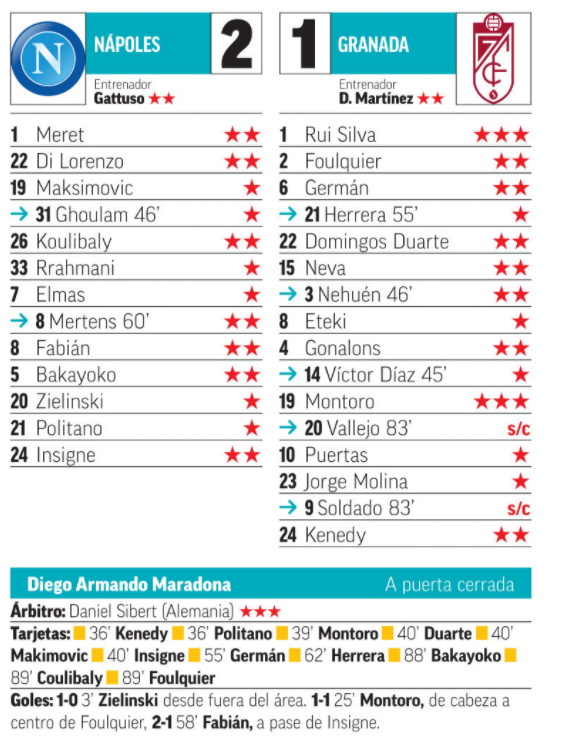

Resumen Athetic VS Granada
Jornada redonda para el Athletic Club en todos los frentes. Tras haber conseguido la épica remontada en Copa del Rey ante el Levante, los de Marcelino recibieron al Granada por LaLiga en el último duelo del domingo. Y, aunque se complicaba el triunfo, un trallazo de Berenguer les dio el 2-1 para sacarles de apuros y apuntarse tres puntos más en la semana de ensueño rojiblanco. Le madrugó al partido el Athletic gracias al acierto de Villalibre. Cuando apenas corrían 3' de la primera parte Sancet se la sirvió al delantero vasco, que retuvo la marca de Germán para darse la vuelta y castigar a Rui Silva de zurda. Tuvieron que esperar hasta la segunda mitad para seguirse haciendo daño. Al 71', incluso, Raúl García tuvo la posibilidad de aumentar la ventaja, pero marró su penalti. Y el Granada respondió a los pocos minutos con un jugadón de Puertas que Jorge Molina remató a placer, empatando el duelo sobre el final. La frustración parecía apoderarse de los vascos, y Marcelino movió banquillo: dio entrada a Berenguer apenas a cinco minutos del final. Y el extremo de Barañáin respondió de la mejor manera a la confianza del entrenador, cazando un rebote al 92' y metiéndola con furia en la portería andaluza. Agónico triunfo y cereza del pastel más dulce para el Athletic.
